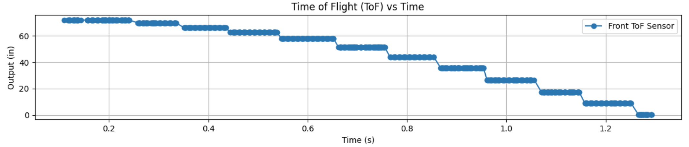
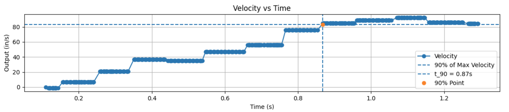
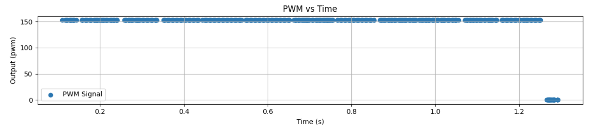
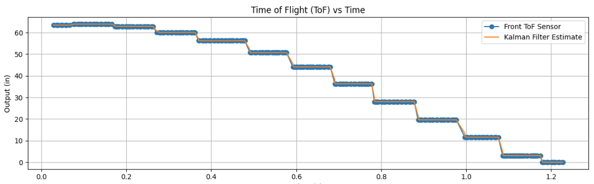
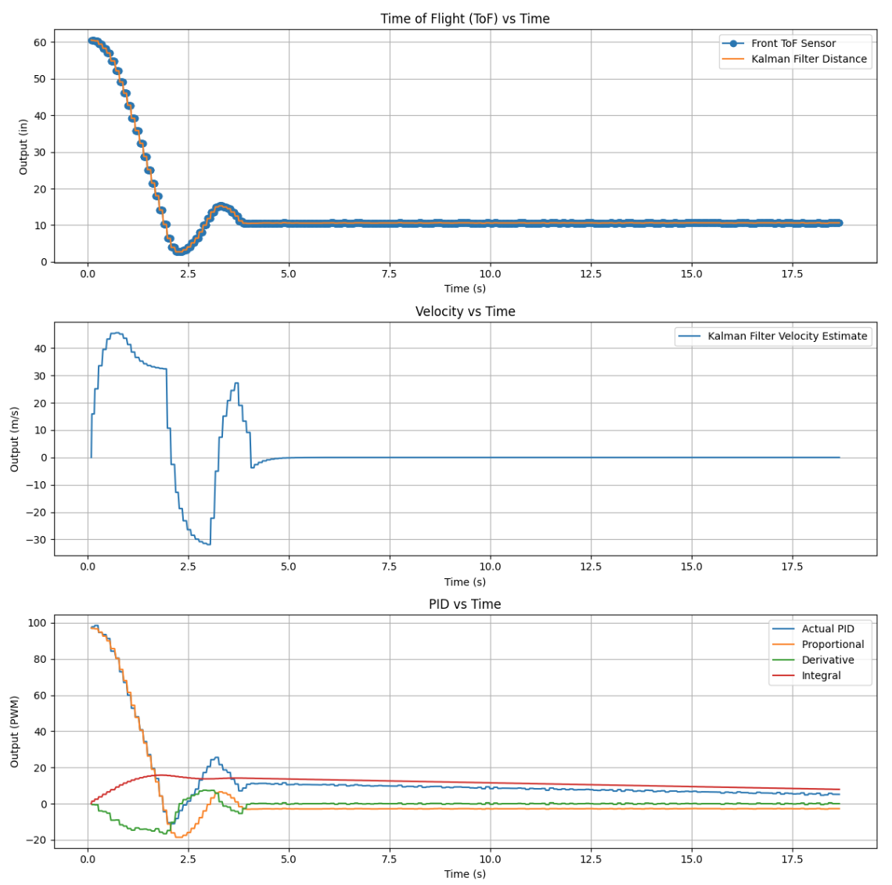

Lab 7: Kalman Filter
In this lab I implemented a Kalman Filter to improve the robot’s position and velocity estimates so it could move faster and more smoothly toward the wall.
1. Objective
The goal of this lab was to use a Kalman Filter to supplement the slower Time of Flight sensor measurements with a model-based estimate of the robot’s state. This allows the robot to better estimate both position and velocity between ToF updates and improves the behavior from Lab 5.
2. Step Response Data Collection
To estimate the system dynamics, I drove the robot toward the wall at a constant motor input of 152 PWM and logged the ToF output, motor input, and timing data.
I used my Bluetooth debugging structure again so I could run the robot, save the values in arrays, and then send those values back to Jupyter for analysis.
This step response data was used to estimate the rise time and overall system behavior, which I later used to build the A and B matrices for the Kalman Filter.
Bluetooth Data Logging Structure
case GET_ALL:
{
const unsigned long starttime = millis();
Serial.println("Start Collecting Data");
for (int i = 0; i < Acc_length; i++)
{
BLEDevice central = BLE.central();
if (central) {
if (central.connected()) {
write_data();
read_data();
}
}
if (!PID_state) break;
if (ToF_Sensor_1.checkForDataReady()) {
int distance1 = ToF_Sensor_1.getDistance();
ToF_Sensor_1.clearInterrupt();
distance1_in = distance1 * 0.0393701f;
time_list[i] = (float)(millis() - starttime);
Tof_Sensor_1_list[i] = distance1_in;
PWM_list[i] = duty1;
}
}
break;
}Step Response ToF Plot

Data Collection Video
3. Velocity and Rise Time Estimation
After collecting the ToF distance data, I computed the robot’s forward velocity in Python by taking the derivative of position with respect to time. This let me analyze the step response in terms of velocity instead of only position.
From the velocity response, I estimated the rise time and used the 90% value of the maximum speed to identify the response speed of the system.
My measured rise time was about 0.868 s.
I also looked at the loop timing. I had 13 definitive datapoints in 1.229 s, which corresponds to about 10.6 loops per second.
That means each loop took about 0.0945 s per iteration.
Python Logic for 90% Rise Time
max_vel = max(Forward_Velocity_list[:1100])
vel_90 = 0.9 * max_vel
axs[1].axhline(y=vel_90, linestyle='--', label='90% of Max Velocity')
for i, v in enumerate(Forward_Velocity_list[:1100]):
if v >= vel_90:
Time_90 = time_list[i]
breakVelocity Plot

PWM Plot

4. State Space Model Setup
Once I had the step response information, I used it to estimate the drag: 0.0066719 and momentum: 0.0022717 behavior of the robot and build the state space model.
The states I used were distance from the wall and velocity.
System Model and Parameter Estimation
m * dv/dt = -d*v + u
Steady State:
0 = -d*v_ss + u
d = u / v_ss
Time Constant:
tau = t_90 / 2.3
Momentum Term:
m = d * tauState Space Representation
State Vector:
x = [position, velocity]
A = [ 0 1
0 -d/m ]
B = [ 0
1/m ]
C = [ -1 0 ]After estimating the model, I discretized the A and B matrices using the sample time. The C matrix was chosen so that the measured output corresponded to the ToF distance reading.
Discrete System Form
Ad = np.eye(n) + Delta_T * A
Bd = Delta_T * B
C = np.array([[-1, 0]])
x = np.array([[-TOF[0]], [0]])I also had to choose covariance matrices for the process noise and sensor noise. These values control how much the filter trusts the model versus the measured sensor data.
Measurement Noise
Σ_z = [ σ₃² ]
σ₃² = (20 mm)²
Process Noise (Dependent on Sampling Time)
Σ_u = [ σ₁² 0
0 σ₂² ]
Sampling Time
Δt ≈ 0.0945 s
Trust in Modeled Position &
σ₁ = σ₂ = √(10² · (1 / Δt))
σ₁ = σ₂ =√(100 / 0.0945)
σ₁ ≈ σ₂ ≈ 32.5 mm
Covariance Matrix Setup
sig_u = np.array([[sigma_1**2, 0],
[0, sigma_2**2]])
sig_z = np.array([[sigma_3**2]])5. Kalman Filter in Python
Before putting the Kalman Filter on the robot, I first implemented it in Jupyter. This made it easier to check that the model and covariance values made sense before moving everything over to the Artemis.
The Kalman Filter works in two main steps: prediction and correction. The model predicts the next state, and then the measured ToF value is used to correct that prediction.
Kalman Filter Function
def kf(mu, sigma, u, y):
mu_p = A.dot(mu) + B.dot(u)
sigma_p = A.dot(sigma.dot(A.transpose())) + Sigma_u
sigma_m = C.dot(sigma_p.dot(C.transpose())) + Sigma_z
kkf_gain = sigma_p.dot(C.transpose().dot(np.linalg.inv(sigma_m)))
y_m = y - C.dot(mu_p)
mu = mu_p + kkf_gain.dot(y_m)
sigma = (np.eye(2) - kkf_gain.dot(C)).dot(sigma_p)
return mu, sigmaThe figure below is where I will place the Kalman Filter comparison plot between the raw sensor signal and the estimated state.
Kalman Filter Estimated vs Raw Data

6. Kalman Filter on the Robot
After testing the Kalman Filter in Python, I implemented it on the Artemis using matrix math. This let the robot estimate distance and velocity during the control loop instead of waiting only on the next raw ToF update.
This was useful because the ToF sensor updates more slowly than the controller can run. With the Kalman Filter, I could use an estimated state that updated continuously and gave smoother behavior.
Matrix Operations on the Robot
#include <BasicLinearAlgebra.h>
using namespace BLA;
Matrix<2,1> state = {0,0};
Matrix<1> u;
Matrix<2,2> A = {1, 1,
0, 1};
Sigma_p = Ad * Sigma * ~Ad + Sigma_u;7. Discussion
Overall, the Kalman Filter improved the robot’s state estimate by combining model prediction with measured sensor data. Compared to relying on only the raw ToF sensor, the Kalman Filter gave a cleaner estimate of both position and velocity.
One of the most important parts of this lab was tuning the covariance matrices. If the process noise was too small, the filter responded too slowly. If the measurement noise was too small, the filter trusted the sensor too much and became noisier.
This lab also showed why a model-based estimate can be more useful than simple extrapolation. The Kalman Filter gave a better estimate between sensor updates and set up the robot for faster control in the next lab.
These are my plots from the Kalman Filter implementation:
Kalman Filter Estimated vs Raw Data
